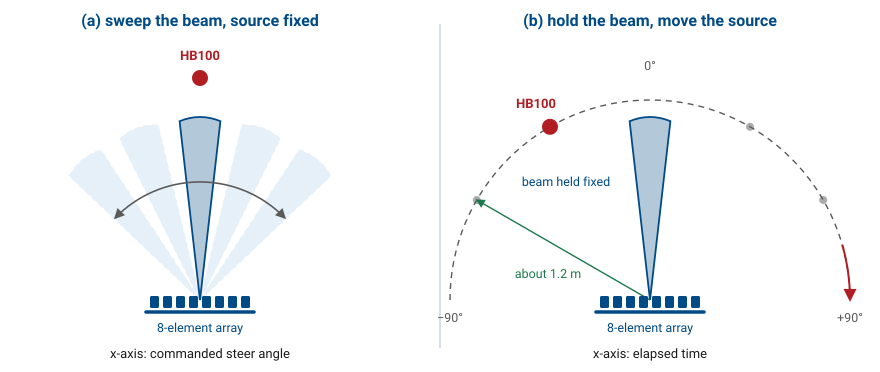
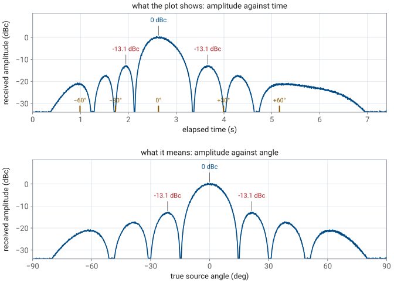
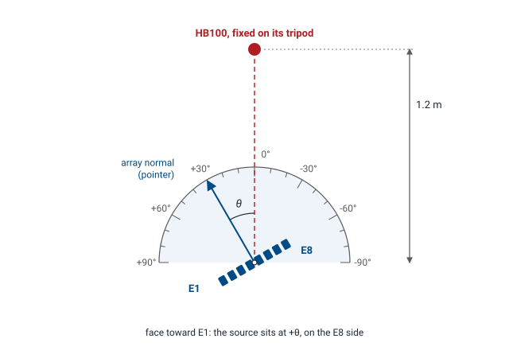
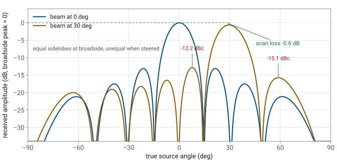
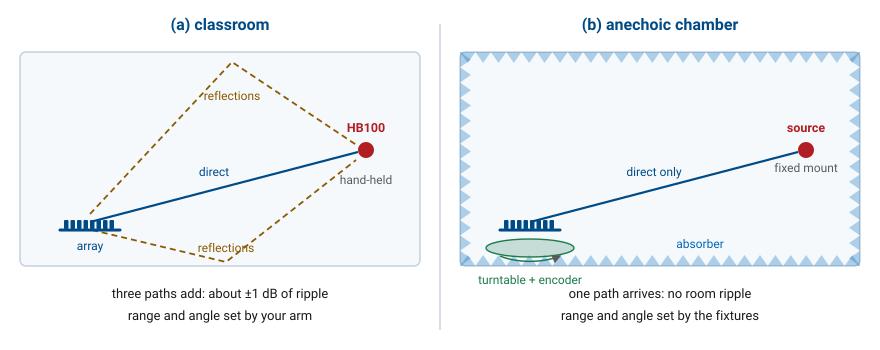

L21 Lab — Antenna Pattern#
Antenna Pattern
Hold the beam still and move the source past it: first by hand, then on a turntable.
L21 Lab · Antennas, Phased Arrays, and Radar Systems · Dr. Neil Rogers
Printing
To print the slides, switch to present mode and print: one slide a sheet, with room for notes. Print from read mode for the whole lesson.
Learning Objectives
- I can distinguish between array factor and true antenna pattern and account for element pattern effects.
From Prediction to Measurement
Part 1, before today: the expected patterns and two error budgets.
Part 2, today: walk the source by hand, then turn the kit on its stand.
Part 3, after: which model the data support, and which method resolves it.
Lesson 21 separated the array factor from the pattern the array radiates and predicted where the two part company: the peak drops as \(\cos\theta_0\) when the beam steers, the two first sidelobes of a steered beam stop matching, and nothing comes out the back. Today we test those predictions on the bench. The L21 Lab packet starts from them: Part 1, the pre-lab you completed before class, works out the patterns at your HB100’s frequency and sizes the errors of the two methods. Today you measure the pattern twice with the beam held still, once by carrying the source around the array by hand and once by turning the kit in front of a fixed source. Part 3, on your own before Lesson 22, reconciles the numbers with the predictions and compares the two methods.
Three Ways to Trace a Pattern
Sweep the beam |
Walk the source |
Turn the kit |
|
|---|---|---|---|
x-axis |
steer angle |
elapsed time |
stand angle |
Measures |
array factor |
element \(\times\) array |
element \(\times\) array |
Distance |
fixed |
your arm |
fixed |

There are three ways to get a pattern out of an array, and they are not the same measurement.
The first is the one you have used since the L18 Lab: put a source somewhere, leave it there, and sweep the beam electronically past it, recording received power at each steer angle. The source sits at one physical angle, so the element pattern contributes the same constant to every point on the trace and drops out of its shape. The trace is the array factor, plotted against the angle the beamformer was commanded to.
The second is the one ADI’s workshop uses. Hold the beam fixed and carry the source around the array on an arc. Now the physical angle changes at every instant, so the element pattern multiplies the array factor exactly as Lesson 21 described, and the trace is the antenna pattern. The GUI plots it against elapsed time, though, so the angle axis is only as good as your walking, and the level is only as steady as your arm.
The third is what an antenna range does. Hold the beam fixed, leave the source on its tripod, and turn the kit in front of it. The trace is the antenna pattern again, but every reading carries a real angle, and the distance to the source never changes.
What Lesson 21 Predicts
At 10.525 GHz |
Beam at 0° |
Beam at 30° |
|---|---|---|
Peak |
0°, reference |
29.6°, −0.6 dB |
First nulls |
±14.7° |
14.2°, 49.0° |
First sidelobes |
±21.4°, −13.1 dBc |
−12.2, −15.1 dBc |
Behind the board |
floor, −25 to −30 dBc |
floor |
Part 1 of the packet works these out at your own kit’s frequency; the dBc values barely move with frequency, and the angles move by about 0.15° per 100 MHz, less than you can read off the stand’s scale. With the beam at 0° the element pattern lowers the ±21.4° sidelobes by only 0.3 dB, too little to see in a room. With the beam at 30° it lowers the peak by 0.6 dB and the outer sidelobe, near 59°, by 2.9 dB, while the inner one, near 8°, sits where the element is flat. The array factor alone would put both at −12.8 dBc. The ground plane removes the back hemisphere, so the reading with the source behind the board should sit at the floor.
The Walk Paints as You Go
The widget below runs the walk in simulation. Choose a steer angle and a walking-speed profile, then watch the trace paint as the source moves around the arc. Run it once with the uniform profile and once with the hand-like profile, and compare the two readouts: the lobe spacing changes completely and the lobe levels do not move at all. The simulation keeps the radius perfect; your arm will not.
Amplitudes Survive, Angles Do Not
The walk’s x-axis is time: an uneven pace moves and stretches the lobes.
Pace cannot change a lobe’s height, but a 10 cm radius drift moves it 0.7 dB.

The level the GUI records at any instant is the pattern at the angle the source occupied at that instant, and it does not depend on how fast the source was moving. Walking slowly through a lobe draws it wider on the plot without changing its height, so the lobe levels survive an uneven walk and the angles do not. The level is not immune to your arm, though: received power goes as \(1/r^2\), so drifting 10 cm in or out at 1.2 m moves the reading by 0.7 to 0.8 dB, more than the scan loss you want to see. Three walks, compared in the packet, show how large that scatter is in practice.
Turning the Kit on Its Stand
The HB100 stays on its tripod, 1.2 m out; the stand turns the kit about the array’s center.
Facing the patches, E1 is on the right. Turning the face toward E1 puts the source at \(+\theta\).
The stand’s scale reads \(-\theta\).

Turning the kit in front of a fixed source records the same pattern as walking the source around a fixed kit, because only the angle between the array normal and the source matters. What changes is everything else. The distance never changes, so the levels can be compared from one reading to the next; the HB100 stays aimed at the array without effort; and each reading is taken at an angle you can read off the stand’s scale, with a click every 5°.
Lesson 18 put \(+\theta\) on the E8 end of the array. Looking at the patches, E1 is at the right end of the row and E8 at the left. Turn the kit so that its face swings toward the E1 end, as seen from the source, and the source ends up on the E8 side of the normal, at \(+\theta\). The stand counts the other way: its scale is engraved on the fixed base and counts clockwise as seen from above, and turning the face toward E1 is a counterclockwise turn, so the pointer reads \(-\theta\). A source at +30° sits under a pointer reading −30. Part 2 starts by confirming that sign with a beam sweep, whose Angle readout, set to Peak, reads the source’s angle.
Two things set how good the rotation is. The kit must turn about the center of the array, between E4 and E5: an axis 20 mm off center moves the source’s apparent angle by up to 1° and its distance by up to 20 mm, about 0.14 dB. The stand puts the array’s center on its axis by design. And its scale, ticked every 5°, reads to a degree or two, which is fine for a lobe 15° wide.
The Steered Pattern
Beam held at 30°: the peak is 0.6 dB below the broadside peak.
Inner sidelobe −12.2 dBc, outer −15.1 dBc: the element pattern, not a fault.

With the beam held at 30°, the main lobe appears when the source reaches about 30° instead of boresight. The peak reads lower than the broadside run, by 0.6 dB for the ideal element and about 0.9 dB for a real patch; the Module 3 dry run measured 0.7 dB with the source 1.2 m out. The rotation can resolve that difference because the distance never changes. A walk cannot, because the radius drift alone is as large as the effect.
The pattern is no longer symmetric. The first sidelobe on the inside of the beam, near +8°, sits about −12.2 dBc; the one on the outside, near +59°, sits about −15.1 dBc. The array factor alone would make them equal, and the element pattern lowers the outer one. A careful walk can show the direction of that 2.9 dB asymmetry; the rotation can put a number on it.
Two Error Budgets
Error |
Walk |
Rotation |
|---|---|---|
Angle axis |
time, not angle |
±1° |
Distance |
±0.7 dB |
±0.14 dB |
Room reflections |
±1 dB |
±1 dB |
The packet’s Part 1 builds both budgets. The walk’s angle error comes from converting time to angle at a constant pace you did not have: a hand 30% fast or slow through the main lobe makes a 13.0° beam read anywhere from 10.0° to 18.6°. Its level error comes from the radius. The rotation removes both, and replaces them with the axis offset and the stand’s scale, which are small and can be measured. Neither method removes the room: a single reflection 18 dB below the direct path moves a reading by a decibel. The rotation’s advantage there is repeatability. The reflections sit in fixed places in the room, so a reading repeated at the same angle comes back to the same value, and a difference between two of them is more trustworthy than either reading alone.
Equipment and Setup
The kit, cabled to your laptop as in Lesson 17, on its rotating stand, 0° toward the source.
The HB100 on its tripod, 1.2 m out at patch-row height, and a taped 1.2 m arc.
You need the ADALM-PHASER kit on its rotating stand from the L17 Lab, connected to your laptop by the Ethernet cable as in Lesson 17; the HB100 with a fresh battery, on its tripod; and masking tape. Tape the stand’s base to the bench with its 0° mark toward the source, and seat the kit’s tripod in the platter’s grooves with the patches facing the pointer. A kit without a stand can use a printed protractor instead, centered under the middle of the array between E4 and E5 with 0° toward the source, but then mark it so that a turn toward E1 reads positive, and turn the tripod carefully about that center.
Set the HB100 1.2 m from the array face at the height of the patch row, facing the array. Lesson 21 put the far-field distance of this aperture at 0.67 m, but level comparisons of under a decibel need more distance: in the Module 3 dry run, scan loss read correctly at 1.2 m and only half of it at 1 m. Tape the walk’s arc on the floor at the same 1.2 m radius, with marks at −90°, 0°, and +90°.
Bring Up the Kit
Browse to your kit’s address from Lesson 17 and wait for the pill to read Connected.
With the HB100 1.2 m out at boresight and the kit at 0°, press Find HB100 and record the Signal Freq in the packet.
Press Calibrate and wait for it to finish.
Open the Lab Presets section, then press 2 Array Factor.
Set Rx Gain (dB) for an FFT peak of \(-10 \pm 3\) dBFS, and record it. Leave it there for the whole lab.
Turn on Show Peak Angle Marker under Plot Options, press Start, and open the Rectangular tab.
This is Lesson 17’s order, for the same reason: Calibrate reads the frequency that Find HB100 stores, and it needs the source at boresight while it runs. The preset buttons respond only once the Lab Presets section is open. The Rx Gain setting is the L17 Lab’s level reference: every level in the packet is a difference between two readings taken at that gain, and the difference holds only while the receiver stays linear. A main lobe with a flat top means the receiver has clipped; turn the gain down and start again.
Run 1: Check the Angle Axis
With the beam sweeping, turn the kit until the stand reads −30, which puts the source at +30°, and record the Angle readout, set to Peak, in Table A.
Repeat with the stand at +30 (source at −30°) and at 0.
At 0°, record the peak, the half-power beamwidth, and both first sidelobes in Table B.
If the Angle readout reads near −30° when the source should be at +30°, the kit is turning the wrong way or the patches face away from the pointer; fix that before going on, because every angle in Tables D and E depends on it. A reading within ±2° of the source angle confirms the sign and the centering. Table B is the array factor, the trace you measured in the L20 Lab, and the reference for the other two runs.
Run 2: Walk It by Hand
Open Lab Presets and press 7 Antenna Pattern.
Set Steer Angle (deg) to 0, and check that the plot title reads “Beam held at 0.0°”.
Lift the HB100 off its tripod and stand on the −90° mark, aimed at the array.
Walk the arc to +90° in about 20 to 25 s, keeping the radius and the aim.
Read the main-lobe peak and both first sidelobes off the trace and record them in Table C.
Repeat twice more, then return the HB100 to its tripod at boresight.
Preset 7 sets Mode, in the Beam Steering section, to Signal vs Time: the beam holds at the Steer Angle, which takes effect as you change it, with no Apply, and the Tracking tab plots the peak level in dBFS against time over the last 30 s. The plot’s title shows the held angle and the update rate. The 30 s counts from when the mode starts, so begin walking promptly: a 20 to 25 s walk then fits the whole arc. Practice the walk once before you record: too fast and each lobe gets only a few updates, too slow and the pattern runs off the edge. Read each lobe’s peak by hovering over the trace. The three walks will not agree exactly, and that disagreement is a measurement in its own right: Part 3 compares it with the rotation’s.
Expect the room to make the two first sidelobes unequal. On phaser-00, two walks read the left one about 11.5 dB below the peak and the right one about 15 dB below, within half a decibel from walk to walk; their average, 13.2 dB, sat on the predicted 13.3. With the source behind the board the trace read about 25 to 30 dB below the peak, so with the uniform taper both sidelobes stand at least 10 dB clear of the floor.
Run 3: Turn the Kit, Both Beams in One Pass
Press 1 Steering Angle so the beam sweeps again, kit at 0°. Hover over the trace at 0° steer and record that level as the reference.
Turn the kit to each 10° mark from −90° to +90°, every second click of the stand. At each, record the Angle readout, the trace at 0° (Table D), and the trace at the sample nearest 30° (Table E), both relative to Step 16.
Turn slowly through each lobe and null of both beams and record the angle and level of each extreme.
Turn the kit to 180°, source behind the board, and record the trace nearest 30° in Table E.
Turn the kit back to 0° before you leave.
Each point of a beam sweep is the beam held at that steer angle for an instant, so one sweep at one kit position reads both held beams at once: the sample at 0° is the beam at broadside, and the sample nearest 30° (29.8° near 10.44 GHz, on the 2.8125° phase grid) is the beam at 30°. One rotation pass therefore fills both tables.
The sweep also says where the source really is. Record the Angle readout at every stop and plot both tables against it, not against the stand’s scale: in the dry run, on a paper protractor, the kit slid about 5° during the pass, and the readout caught it. The stand’s detents make a slip much less likely, and the readout still catches one. Beyond about ±70°, or near a null of the element pattern, the readout can wander; there, use the mark.
Turn the kit by the platter, not by the board, so the tripod stays seated in its grooves and the array on the axis, and keep the cables slack enough to follow it. The 10° marks sketch the patterns; they cannot give the sidelobe levels, because a sidelobe peaks between marks. Turning slowly through a lobe while you watch the level and recording its highest reading is how an antenna range finds a lobe peak. Where the level stops changing as you turn, write “floor”.
Referring Table E to the broadside reference makes the scan loss read directly: the 30° beam’s main-lobe level is the drop in peak gain. Take it twice, a few minutes apart, if you have time; a drop that repeats is a measurement, and one that does not is a reflection. At 180° the patches face away from the source and the ground plane sits between them.
Worked Example: Reading dBc off a Trace
Worked example — reading dBc off a trace
A beam-held trace gives peak readings of −18.4 dBFS for the main lobe, −31.2 dBFS for the left first sidelobe, and −29.9 dBFS for the right first sidelobe. The full-scale reference cancels when you take the ratio, so subtract:
Both straddle the −13.1 dBc expected at broadside, and the 1.3 dB spread between them is about what a classroom’s reflections produce. A pair reading −6 and −7 dBc would not be a uniform illumination, and would send you back to Calibrate and to the element gain sliders.
Classroom Against Chamber
Angle: the rotation reads it; a range encodes it.
Distance: the rotation fixes it.
Reflections: ±1 dB in a room; a chamber absorbs them.
Far field: set by the room’s size, chamber or not.

The rotation is a paper version of an antenna range, and comparing the two shows what the classroom still leaves in your data.
Angle. A range turns the antenna on a turntable with a shaft encoder, so every sample carries its angle to a fraction of a degree. Your sweep’s Angle readout gives each stop’s angle to about a degree, which the walk’s time axis cannot.
Distance. A range bolts the source at a fixed distance. So does the rotation; the walk does not.
Reflections. The direct path is not the only path from the HB100 to the array. Reflections off the floor, the ceiling, and the whiteboard arrive too and add to the direct signal in and out of phase, which is the ±1 dB of ripple in both of your methods. An anechoic chamber lines every surface with absorber so only the direct path survives.
Far field. You set 1.2 m against Lesson 21’s 0.67 m. A chamber satisfies the far-field condition only if it is long enough for the antenna and frequency; a large antenna in a short chamber has the same problem as a large antenna in a classroom.
No Hardware?
Note
The walk and the rotation have no simulated version: the simulator’s source is fixed at boresight and cannot be moved, and turning a simulated kit changes nothing. Run the electrical sweep of Table B in the hosted simulator at livethisdream.github.io/phaser, and use the walk widget above to see what a walked trace looks like.
Lab Packet
The L21 Lab packet is one submission for the whole lab, turned in complete before Lesson 22. It has three parts:
Part 1, Pre-Lab (individual, before the lab period, because you need it at the bench): the patterns to expect with the beam at 0° and 30°, the error budgets of the walk and the rotation, and reading dBc off a trace.
Part 2, Measurements (your own kit’s data, recorded in class): the angle check, the electrical sweep, three walks, and two rotations.
Part 3, Writeup (individual, after the lab): which model the data support, the walk against the rotation, and a far-field problem.
Summary: The Pattern on the Bench
Idea |
What it is |
Number to remember |
|---|---|---|
Beam sweep |
beam swept past a fixed source |
the array factor; x-axis is steer angle |
Hand walk |
source carried around a held beam |
x-axis is time; ±0.7 dB from a 10 cm radius drift |
Rotation |
kit turned in front of a fixed source |
real angles, fixed distance; ±1° |
Scan loss |
element pattern at the steer angle |
−0.6 dB ideal, −0.9 dB patch, at 30° |
Sidelobe asymmetry |
element pattern lowers the outer lobe |
−12.2 vs −15.1 dBc at 30° |
Source distance |
far field and level accuracy |
0.67 m far field; measure at 1.2 m |
Room reflections |
direct path plus copies |
±1 dB a reading, ±2 dB on a dBc value |
Looking Ahead
Uniform illumination fixed the first sidelobes near −13 dBc today.
Lesson 22 makes that number a design choice: taper the Element Gains.
Lower sidelobes widen the beam and lower the peak gain.
You now have a measured −13 dBc in your packet, and so far it has been a fact about uniform illumination rather than a choice. Lesson 22 turns it into a design variable. Feeding the eight elements unequally, with more power in the middle and less at the edges, pushes the sidelobes down, and the Element Gains sliders you have been leaving at 100% are how you do it on this hardware.
A taper that lowers the first sidelobes by 10 dB widens the main lobe and lowers the peak gain, and Lesson 22 derives exactly how much of each. Before the next period, look back at your broadside rotation and decide how much beamwidth you would give up to put those first sidelobes at −25 dBc, then check your guess against the numbers.